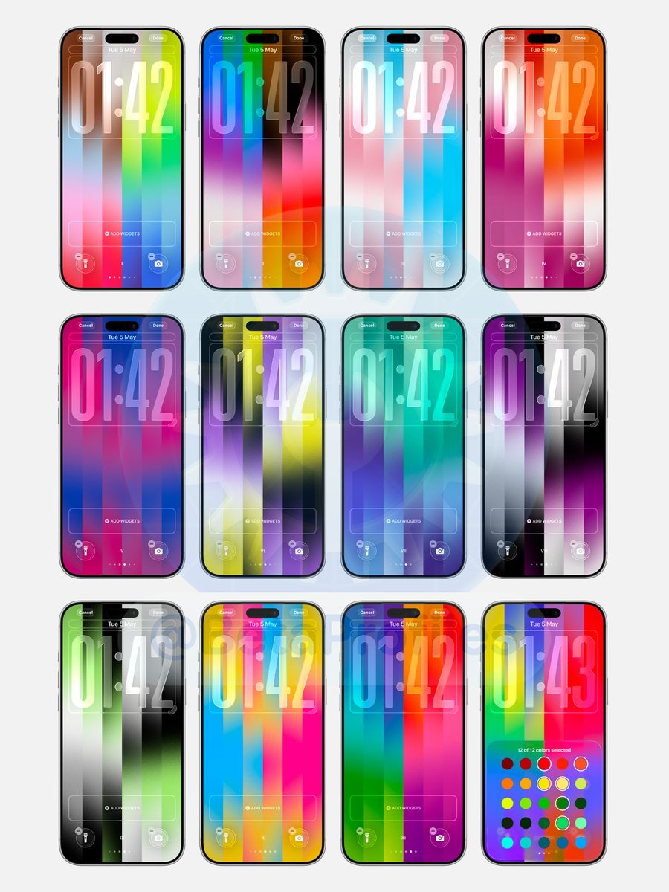

脚踩你爷爷登顶称王
@Dream_xyuuup
给顺女看她们对3反应很大，我还纳闷她们咋知道的结果说是橹穆配色😹这下可以光明正大换上不怕炸柜了

Beta Profiles
@BetaProfiles
The Pride Luminance wallpaper in iOS 26.5 comes in 11 different color combinations, plus one variant that lets you mix and match up to 12 colors with a total of 75 colors to choose from. https://t.co/bKNWCu9OZk